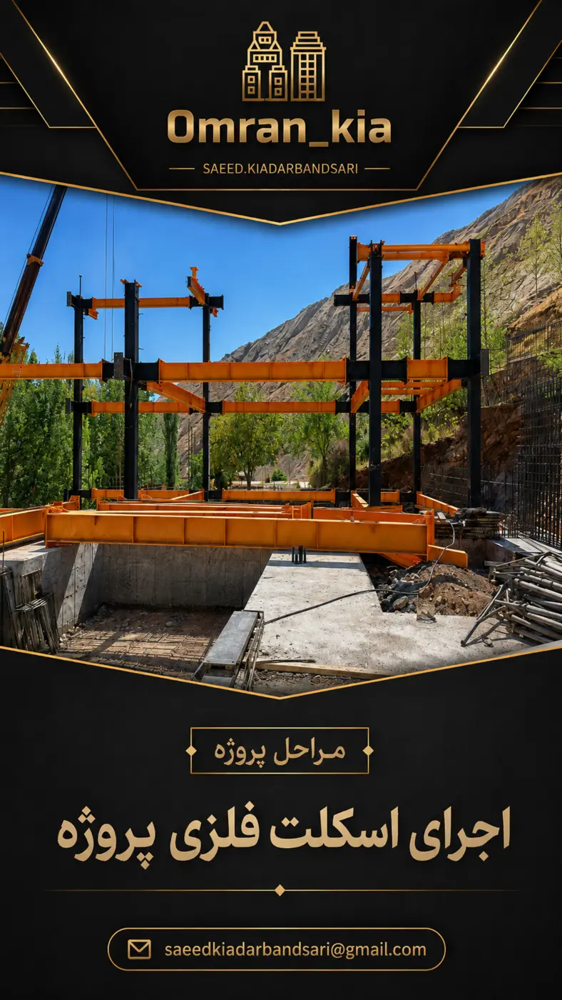
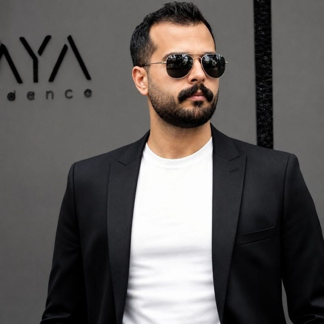
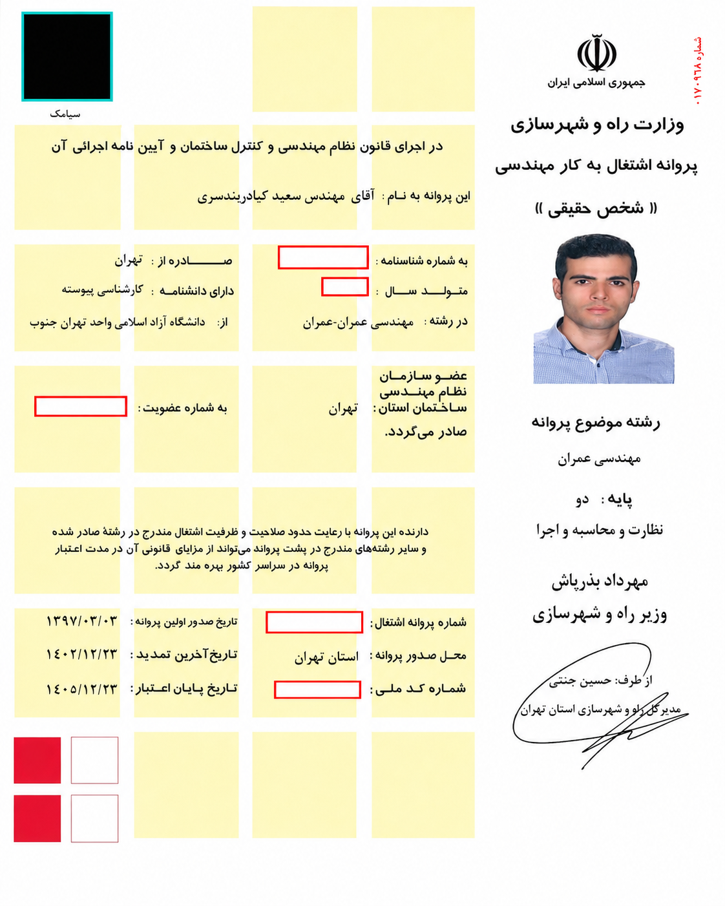

طراحی یکپارچه
معماری، سازه، برق، مکانیک و تهیه نقشههای فاز یک، فاز دو و اجرایی.
DESIGN & ENGINEERING
راهکار یکپارچه برای طراحی معماری و سازه، تأسیسات، نظارت فنی، اجرای صفر تا صد و کارشناسی پروژههای ساختمانی.
شرکت ابنیه سازان پایدار شمیران با رویکردی میانرشتهای، خدمات طراحی، محاسبات، نظارت، اجرا و مشاوره را در یک ساختار واحد ارائه میکند تا کیفیت، زمان و هزینه پروژه همزمان کنترل شوند.
از مطالعات اولیه تا تحویل نهایی؛ با هماهنگی کامل میان معماری، سازه و تأسیسات.
معماری، سازه، برق، مکانیک و تهیه نقشههای فاز یک، فاز دو و اجرایی.
DESIGN & ENGINEERINGکنترل انطباق عملیات با نقشههای مصوب، مقررات ملی و الزامات کیفی.
TECHNICAL SUPERVISIONاجرای صفر تا صد، مدیریت عوامل، تأمین، برنامهریزی و کنترل زمان و هزینه.
CONSTRUCTION MANAGEMENTامکانسنجی، ارزیابی فنی، برآورد خسارت و ارائه راهکار برای تصمیمگیری مطمئن.
CONSULTING & EXPERTISE
رئیس هیئتمدیره شرکت ابنیه سازان پایدار شمیران، دکتری تخصصی مهندسی عمران گرایش سازه، دارای پروانه اشتغال به کار مهندسی در صلاحیتهای محاسبات، نظارت و اجرا و کارشناس رسمی دادگستری رشته راه و ساختمان.
برای مشاهده توضیحات و گالری کامل هر پروژه، روی کارت آن کلیک کنید.
کارشناس رسمی دادگستری رشته راه و ساختمان و دارای پروانه اشتغال مهندسی در حوزه محاسبات، نظارت و اجرا.
تأمین دلیل و تبیین وضعیت ابنیه، ساختمانها و طرحهای عمرانی
تعیین پیشرفت فیزیکی ابنیه، ساختمانها و طرحهای عمرانی
تشخیص حسن انجام کارهای ساختمانی و طرحهای عمرانی از لحاظ فنی و اجرایی
ارزیابی و برآورد میزان خسارت در محدوده صلاحیتهای اخذشده
ارزیابی واحدهای مسکونی
پروانه اشتغال به کار مهندسی در صلاحیتهای محاسبات، نظارت و اجرا

مهندسی عمران — صلاحیت محاسبات، نظارت و اجرا
برای مشاهده بزرگتر روی تصویر کلیک کنیدفرم را تکمیل کنید؛ پیام آماده بهصورت مستقیم در واتساپ باز میشود.